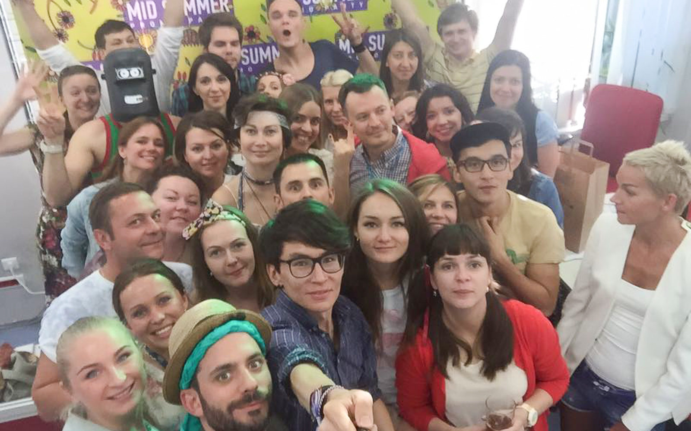

С Борисом я познакомился, когда пришёл устраиваться на работу в СДС-Медиа. Мне даже довелось с ним немного поработать, и, хоть по работе мы пересекались нечасто, я быстро понял, что Борис — увлечённый своим делом профессионал.
В Москве это поняли ещё быстрее, и примерно через полгода Борис уехал в столицу, где продолжил расти профессионально. На вопросы Борис отвечал ещё в сентябре, поэтому там есть немного про кризис. Сейчас, быть может, всё изменилось.
Борис, чем ты занимался до того, как переехал из Кемерова?
Был такой очень маленький телеканал «Мой город», который занимался ретрансляцией спутникового телеканала и вставлял рекламу. Марина Щетинина предложила попробовать сделать проект для университета на этом канале. Проект получился, как мне кажется, неплохим. Принося готовые программы в редакцию, познакомился с Анастасией Танасюк, замечательным профессионалом, и понял, что хочу здесь работать. Помог сделать еще один проект. И все «завертелось».
Мне было очень комфортно работать в новом коллективе, и пробовать делать то, что никто не делал в Кузбассе, произошел ряд изменений в структуре телеканала, сменился его собственник.
Постоянно ставились новые интересные задачи, давалась возможность их решать. Это было очень захватывающе, а окружающим, как мне кажется, нравился подход к решению и то, что получалось «на выходе». Мы добились определенных результатов и высокой оценки, как зрителей, так и экспертов.
Решение переехать было спонтанным или ты к этому шёл целенаправленно?
Я очень люблю Москву, и побывав однажды, думал о том, что жить в ней было бы интересно. Но не могу сказать, что я мечтал об этом. При этом меня постоянно приглашали на очень интересную работу сюда с первого курса университета. Я не соглашался. Конкретную причину сформулировать не могу :).
Выбирал куда переехать? Почему именно Москва?
Самый большой город самой большой страны самого большого континента дает определенные возможности в плане профессионального роста и финансового благосостояния. Есть конечно определенные трудности:
«В этом городе не каждый герой, кто не первый, тот уже не второй. Каждый груб, каждый смел. Опоздал. Не успел.» © группа Винтаж — “Москва”.
Но «audentes fortuna juvat».
Как прошёл переезд?
Я не уделял этому много внимания.
Как дела с работой в Москве?
Если рассуждать глобально о кадровом рынке столицы, то, конечно, кризис заметен. В медийной сфере происходят разнонаправленные брожения, которые, впрочем, не вызывают какой-то паники. С грустью наблюдаю стагнацию малого и среднего бизнеса в этой сфере.

Тем не менее, у меня есть знакомые профессионалы высшего порядка в сфере производства видео, которым комфортнее работать в виде малого бизнеса. И им удается расти, развиваться, и наращивать оборот. Как всегда: профессионалы всегда пользуются спросом, и не ищут работу, она сама их находит, при этом позволяя выбирать интересные проекты. Любители сетуют на внешние факторы.
Как с жильём, сколько стоит аренда/покупка?
Зайдите на “ЦИАН” или их конкурента и посмотрите. Цены постоянно меняются.
Как изменились доходы/расходы?
Выросло и то, и другое.
Что изменилось в жизни вообще?
Декорации.
Что отличает Москву от Кемерова больше всего?
Наличие метро и дореволюционная архитектура. Автомобильные пробки, высотки, дорогие магазины, возможность заработать, есть и в Кемерово.
Что было сложнее всего оставлять в Кемерово?
Я так часто бываю в Кемерово, так часто общаюсь с кемеровчанами посредством средств связи и встречаюсь лично, так часто сотрудничаю, что я не чувствую, что я что-то оставил. С изобретением самолета, а потом еще и интернета, планета сжалась до размеров Ио, пятого спутника Юпитера.
Планируешь ли переезжать ещё куда-то в ближайшие лет 5?
Планировать можно многое, но жизненный опыт показывает, что на 5 лет планировать ничего нельзя. И вообще, какая разница, где жить? Я планирую “найти себя”, увеличить уровень жизни, прийти в гармонию с самим собой, больше путешествовать, больше заниматься проектами, которые мне интересны. Планирую научиться многому, чего не знаю и не умею. А размышлять о переезде — пустая трата времени.